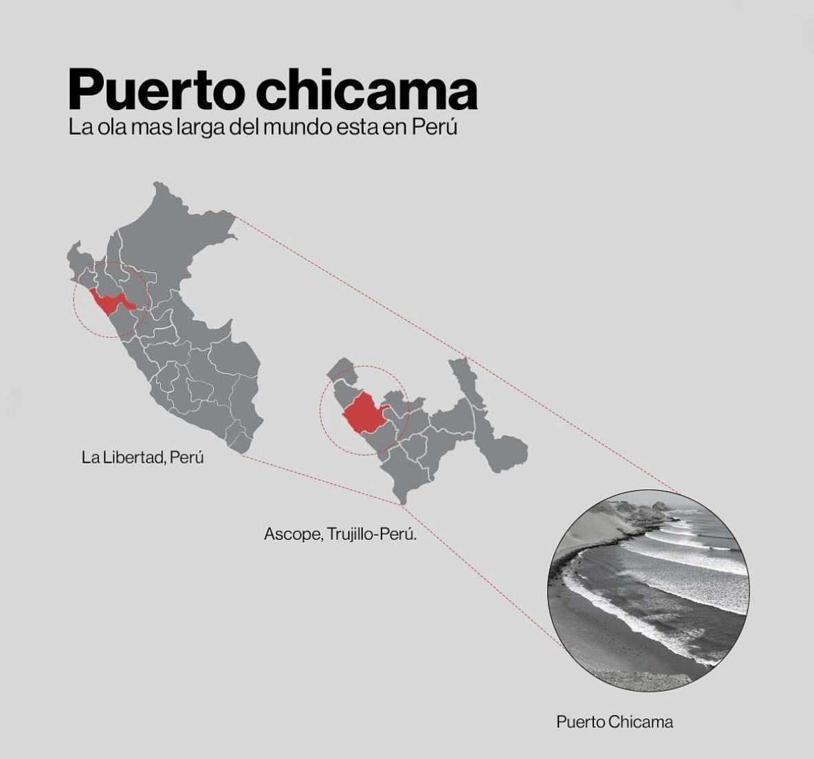

¡Bienvenido, Mauro!
Has llegado a Puerto Chicama, hogar de la ola más larga del mundo. Este viaje es
una invitación a desafiar tus propios límites, a descubrir hasta dónde puedes llegar y a dejar que el
océano te muestre su magia.
"No hay mar más vasto que aquel que nos habita. Cada
ola que enfrentas es un espejo de tu propio abismo."

Ubicado en la costa norte de Perú, Puerto Chicama es un pequeño pueblo pesquero conocido mundialmente
por tener la ola más larga del mundo. Se dice que fue descubierto como destino de surf en 1965 por el
surfista hawaiano Chuck Shipman, quien lo avistó desde un avión y quedó maravillado por la extensión de
la ola. Desde entonces, se ha convertido en un punto de peregrinación para surfistas que buscan la
experiencia de correr olas kilométricas.
Puerto Chicama tiene temperaturas suaves durante todo el año debido a la corriente de Humboldt. Con una
temperatura promedio que oscila entre 15°C y 25°C.
y una temperatura del agua que oscila entre 17°C y 22°C, se recomienda usar traje de neoprene 3/2 mm o
incluso 4/3 mm en los meses más fríos.
Condiciones de Surf
Tipo de ola: Point break de izquierdas, considerado el más largo del mundo.
Sección más larga: Puede superar los 2 km en días épicos.
Swell ideal: Proveniente del suroeste.
Marea: Funciona mejor con marea media a alta.
Viento: Offshore constante debido a los vientos alisios.
Nivel recomendado: Cuenta con secciones aptas para todos los niveles, desde
principiantes hasta avanzados.
Estas son las diferentes secciones en las que se divide la ola de Chicama:
El Cape: Es la sección más expuesta al oleaje y funciona casi todos los días, aunque
también es la más expuesta a los fuertes vientos. Es un pico bien definido y constante, que rompe con
más calidad durante el verano con swell del noroeste.
El Point: Situada frente a las rocas y con un fondo de arena compacta, esta segunda
sección puede llegar a tener una longitud de más de 1 kilómetro. Durante la marea baja puede dar buenos
tubos y en marea alta paredes amplias y maniobrables.
Las Dos Tetas: Una sección que comienza muy rápida, en la que sale algún tubo y aunque
parezca que va a cerrar de repente se frena y permite realizar todo tipo de maniobras.
El Hotel: Situada frente al Chicama Surf Resort, es una sección rápida en la que una
maniobra mal ejecutada puede hacer que pierdas la ola.
El Hombre y El Malecón: Son las dos últimas secciones y están consideradas como la
mejor parte de la ola. Es la zona con olas más verticales y los días con un buen swell y fuerte viento
del suroeste puede dar tubos largos y redondos.
"Puerto Chicama es un lugar donde el tiempo parece detenerse. Su ola interminable no solo es un desafío
físico, sino también una experiencia casi meditativa para quienes se aventuran a recorrer su longitud."